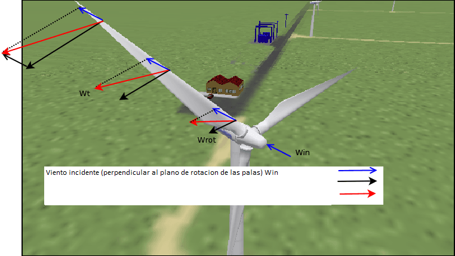

The blades of a wind turbine have similar requirements to the wings of an airplane. Why do the blades rotate? explains the physical principles that cause the blades of a wind turbine to rotate. The force on a blade can be broken down into two forces: one similar to that which keeps an airplane in the air (lift), which in a wind turbine causes the blades to rotate; and another force (dragging) opposes the flow of air and must be compensated for by the thrust of the airplane's engines, or in the case of wind turbines, must be supported by the tower, which tries to bend.
The relationship between these two forces (lifting and dragging) depends on the shape of the blade section (air foil). The following figure shows several types. Logically, designs that maximize the lift/drag ratio are sought. In general, the best lift/drag ratios are obtained when the thickness to chord ratio (distance between the leading and trailing edges) is in the range of 10% to 15%.

Fig. 1.
The following figures show some construction details.

Fig 2.
An important difference between the working conditions of wind turbine blades and aircraft wings is that the wind "seen" by an aircraft wing is uniform, while the wind "seen" by a wind turbine blade is not.
The following figure (3) shows the two sources of wind that reach the blade. On the one hand, there is the "real" wind incident on the plane of rotation of the blades, indicated by the vector Win, which is uniform along the blade and parallel to the ground.
The other wind incident on the blades (Wrot) is due to the rotation of the blades: this wind is proportional to the rotational speed of the blades at a given moment, and depends on where it is measured along the blade: the further away from the axis of rotation, the more wind.
|Wrot| = 2 * π * DistanceFromSectionToHubCenter * Wind
The direction of this rotational wind is a vector that lies in the plane of rotation of the blades, and is therefore perpendicular to the actual wind (Win). The resulting wind (Wt) is the vector composition of both winds.

Fig 3.
The influence of the wind on each section of the blade is described in Figure 2 of Why do the blades rotate? The "Total Winds" vectors (in red) in that figure correspond to the Wt in the previous figure. To ensure that the "blade angle of attack" (pitch) has a uniform value along the blade, each section of the blade has a relative position with respect to the previous section where the effect of these is compensated. See the following figure.

Fig. 4.
Logically, this value of change in angle of attack per blade section depends on the magnitude of the wind (V). In practice, this requires a compromise in the design.